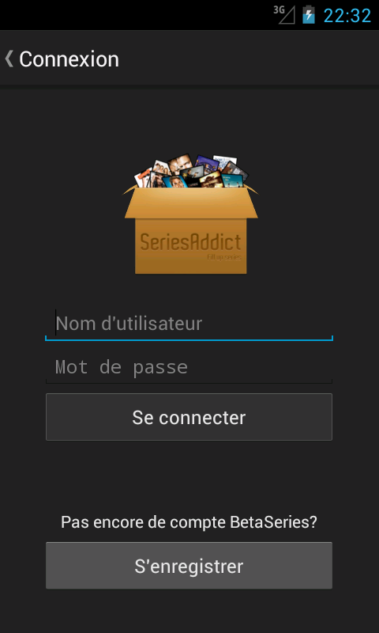
SeriesAddict se base sur BetaSeries pour garder toutes les informations à propos du suivi de vos séries. Un compte est donc nécessaire à l'utilisation de l'application. Si vous n'en avez pas un, pas panique, SeriesAddict vous propose de le créer directement en 30 secondes chrono!
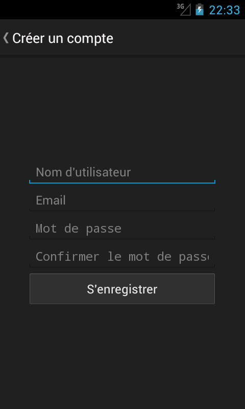
Si vous n'avez pas de compte BetaSeries, il vous suffira de remplir se formulaire pour en créer un directement depuis l'application. La création ne prend que quelques secondes et aucun email publicitaire ne vous sera envoyé par la suite! Une fois le compte créé, vous pourrez commencer à suivre l'avancement dans le visionnage de vos séries.
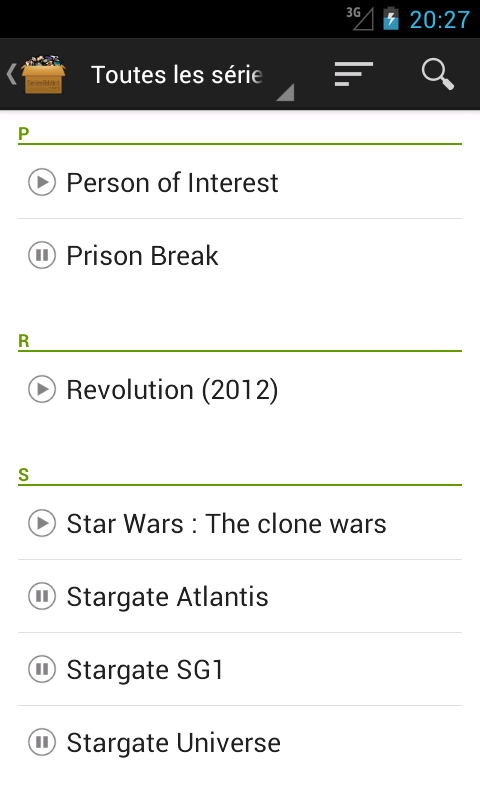
Vous retrouverez sur cet écran toutes les séries que vous avez ajouté à votre compte. Il vous est possible de les archivées / désarchivées ainsi que de les trier par noms. Vous souhaitez avoir plus d'information sur une de ces séries? Un simple "tap" vous amènera sur sa fiche détaillée.
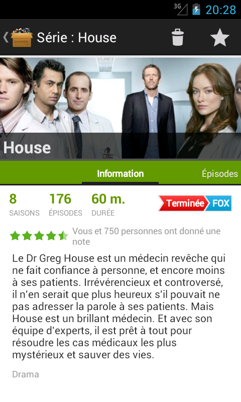
Toutes les informations à propos d'une série sont affichées ici: Statut de la série, temps moyen d'un épisode, synopsis, chaîne de diffusion ainsi que le(s) thème(s) classés par catégorie. Les fiches séries permettent également d'accéder aux commentaires, épisodes et autres d'un simple glissement de doigt à gauche ou droite.
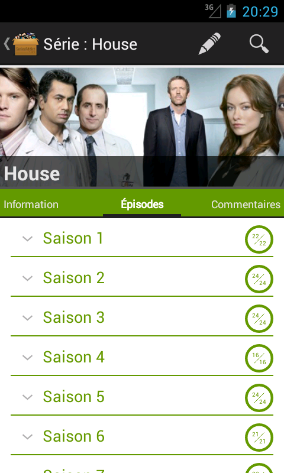
Chaque fiche série dispose de la liste de tous les épisodes diffusés. Elle vous permet de suivre votre progression ainsi que d'accéder à la fiche détaillée d'un épisode, de les marquer comme vu ou téléchargés et de les noter.
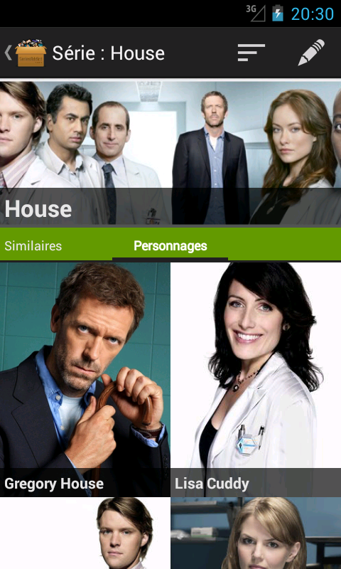
Premium En plus des informations générales de chaque série, vous avez accès à la liste des personnages qui jouent un rôle dans celles-ci ainsi qu'à un certain nombre d'informations comme une description / type de rôle que le l'acteur interprète.
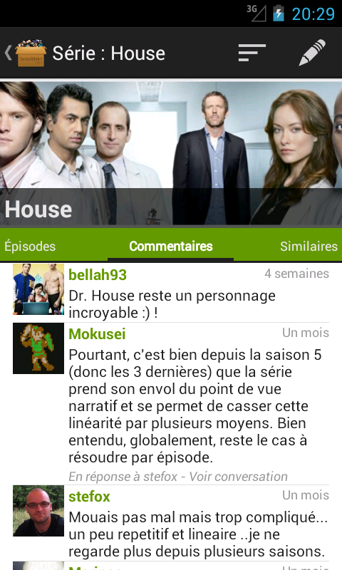
À partir de cet écran, vous pouvez voir les commentaires que les autres membres de BetaSeries ont laissé à propos de la série. Vous pouvez également répondre aux commentaires déjà postés ou en créer un nouveau.
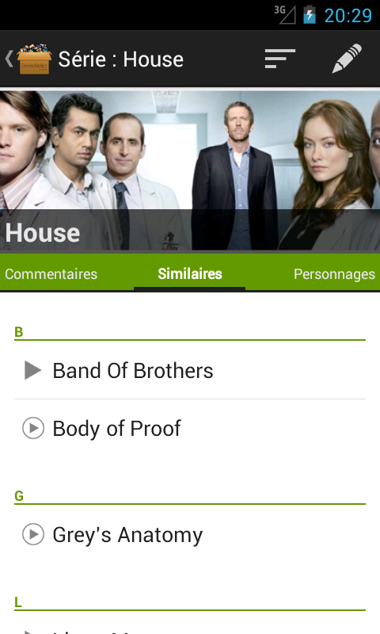
Premium Vous avez aimé une série et vous aimeriez en trouver d'autre dans la veine? Cet écran est fait pour vous. Chaque fiche série dispose d'une liste de de séries similaires se basant sur la catégorie de la série et des suggestions faites par les membres membres de BetaSeries.
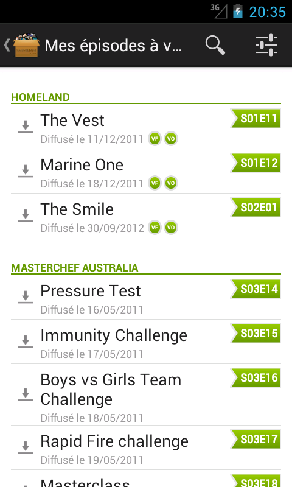
Cet écran vous affichera, en fonction des séries qui sont ajoutées à votre compte, la liste des épisodes qu'il vous reste à voir. Cette liste est bien évidemment mise à jour lorsqu'un nouvel épisode est disponible.
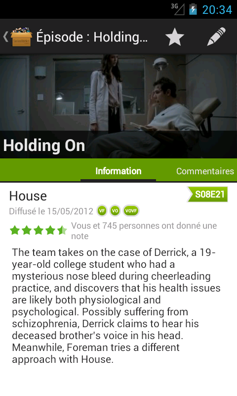
Toutes les informations à propos d'un épisode sont affichées ici: Titre, synopsis, date de diffusion originale, numéro d'épisode / saison, langues des sous-titre disponible, note moyenne donnée par les membres de BetaSeries. Les fiches épisode permettent également d'accéder aux commentaires, sous-titres et autres d'un simple glissement de doigt à gauche ou droite.
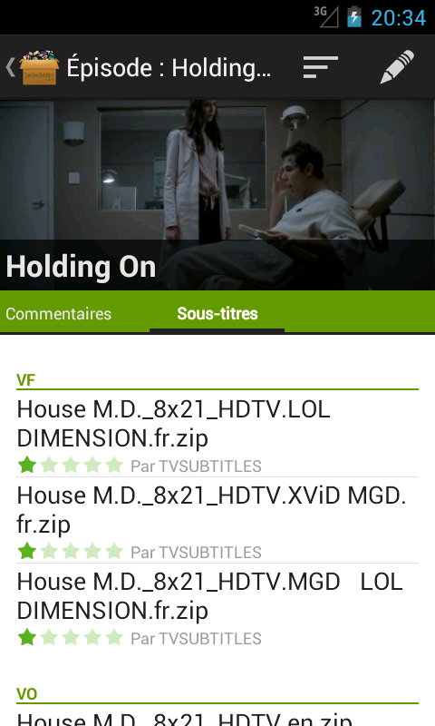
BetaSeries utilise plusieurs sources afin de proposer à ses membres des sous-titres lors de la sortie d'un épisode. Cette écran regroupe tous les sous-titres disponibles classés par source / langue / qualité. Vous pouvez télécharger directement les fichiers depuis cet écran sur votre téléphone / tablette.
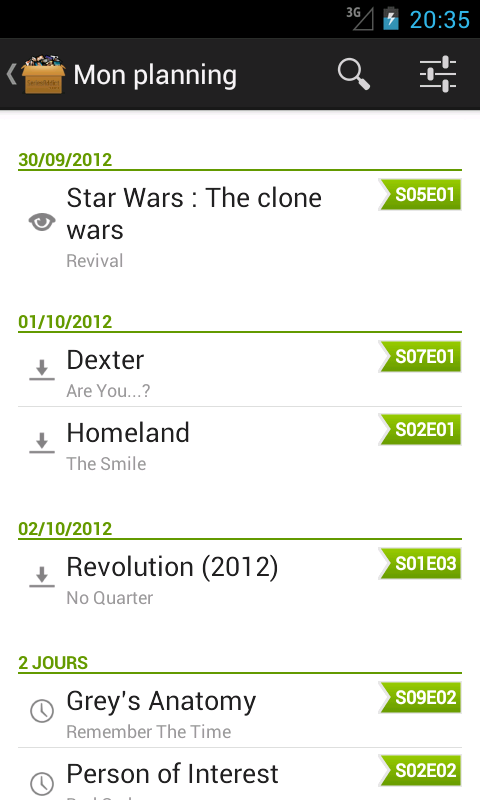
Cet écran vous permet de visualiser d'un seul coup d'oeil, les épisodes disponible de 7 jours avant la date actuelle jusqu'à 6 mois. Les mêmes actions que pour l'écran "Épisode restant à voir" sont accessibles ici.
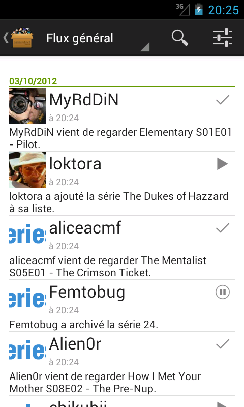
Qu'est-ce que vos amis ont récemment regardé? Quelle séries suivent-il? Vous avez accès à ces informations depuis cet écran (suivant les paramètres de confidentialité définis de vos amis et membres de BetaSeries).
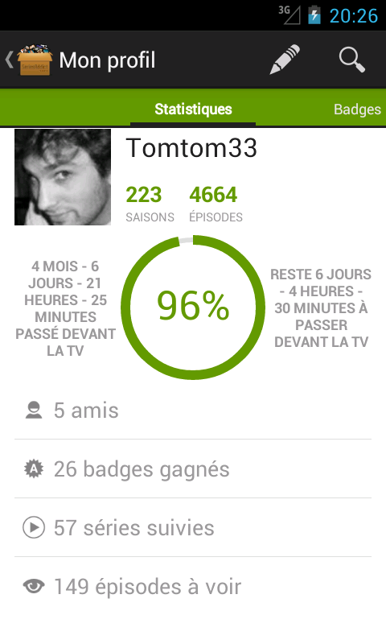
Chaque membre de BetaSeries dispose d'un profil complet que vous pouvez consulter (suivant les paramètres de confidentialité définis) incluant des statistiques sur votre consommation de Séries. Attention à l'overdose! ;)
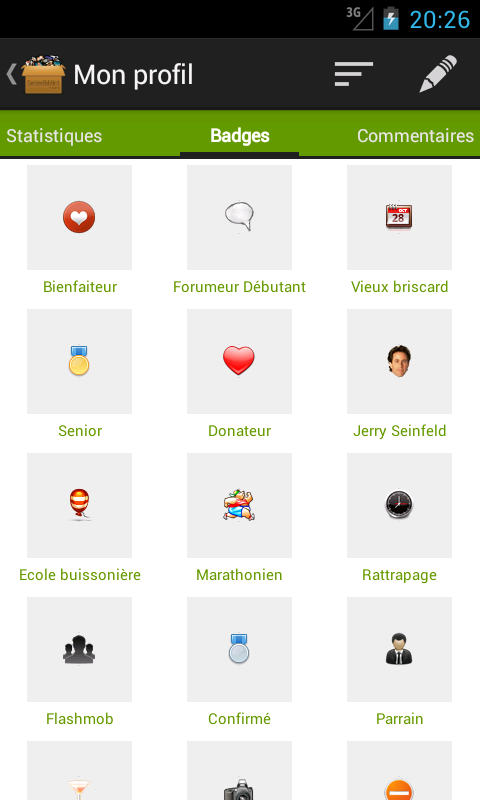
En fonction de vos actions, vous pouvez gagner des badges. Un moyen ludique pour vous amusez avec vos amis BetaSeries tout en assouvissant votre passion pour les séries!